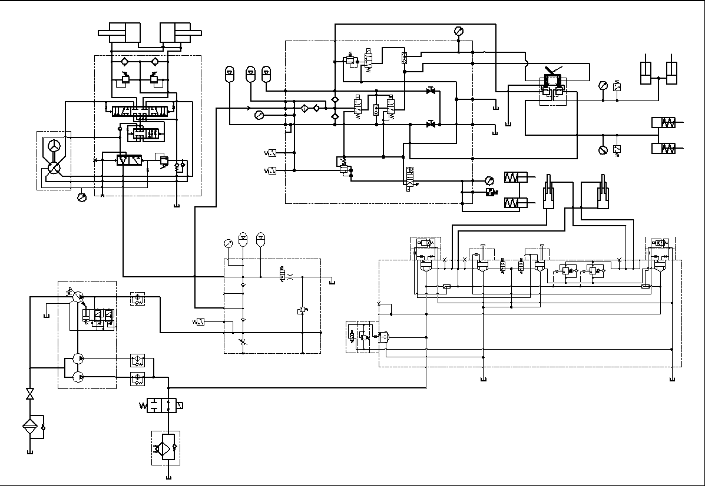

Описание
Описание
Общие сведения
Если не указано иное, номера позиций в скобках совпадают с номерами позиций на рис. 1.
Гидравлическая система обеспечивает гидравлическую мощность для систем рулевого управления, подъемных систем, тормозных систем и вспомогательных устройств. Подробнее см. в разделе «Система и компоненты»
Гидравлический фильтр (1)
См. раздел 050-0010 «Гидравлические фильтры».
Гидравлический фильтр (1) установлен внутри левой продольной балки рамы для фильтрации гидравлического масла высокого давления рулевого управления, тормозной системы и подъемной системы.
Гидравлический бак (2)
См. раздел 050-0020 «Гидравлический бак».
Гидравлический бак (2) установлен снаружи левой продольной балки рамы для фильтрации для обеспечения необходимой среды для систем рулевого управления, торможения и подъема. Это также помогает рассеивать теплоту системы.
Узел привода гидравлического насоса (3)
См. раздел 050-0030 «Узел привода гидравлического насоса».
Узел привода гидравлического насоса (3) установлен на внутренней стороне на середине рамы, а передняя часть соединена с выходным валом генератора с помощью трансмиссионного вала и соединена с рамой с помощью монтажного кронштейна и подушки. Узел привода гидравлического насоса (3) обеспечивает мощность для гидравлического насоса.
Подъемная система (4)
См. раздел 050-0040 «Описание подъемной системы».
Подъемная система (4) осуществляет подъем и опускание кузова и осуществляет управление скоростью транспортного средства во время подъема и опускания с помощью элементов управления подъемного клапана. Он включает подъемные насосы, подъемные клапаны, подъемные цилиндры и т. д.
Система рулевого управления (5)
См. раздел 050-0090 «Описание системы рулевого управления».
Система рулевого управления (5) обеспечивает рулевые требования к транспортному средству в нормальных и аварийных условиях для обеспечения безопасного вождения автомобиля. Он включает насосы рулевого управления, рулевые аккумуляторы, рулевые механизмы, усилители рулевого потока, рулевые цилиндры, рулевые комбинированные клапаны и т. д.
Система рулевого управления (6)
См. раздел 050-0170 «Описание тормозной системы».
Тормозная система (6) позволяет тормозам автомобиля достигать требований к парковке автомобиля в различных условиях эксплуатации. Она включает тормозной аккумулятор, педальный тормозной клапан, тормозной клапан, тормозной комбинированный клапан, электромагнитный клапан стояночного тормоза, челночный клапан. Тормозная система (6) поставляет масло под давлением через насос рулевого управления.
Гидравлическая система охлаждения (7)
См. раздел 050-0240 «Система гидравлического охлаждения».
Гидравлическая система охлаждения (7) поддерживает температуру гидравлической системы в подходящем диапазоне для обеспечения эффективной работы гидравлической системы. Она включает гидравлический масляный клапан охлаждения, гидравлический масляный радиатор, обратный клапан и т. д.
Гидравлический шкаф управления (8)
См. раздел 050-0250 «Установка шкафа гидравлического управления».
Гидравлический шкаф управления (8) установлен на задней платформе кабины, тормозной аккумулятор установлен на правой стороне шкафа гидравлического управления (8), а гидравлический шкаф управления (8) оснащен комбинационным тормозным клапаном и тормозным клапаном, 8 манометрами. Манометры отображают, соответственно, соответствующие давления подъемной системы, системы рулевого управления и тормозной системы, обеспечивая данные и диагностическую основу для обслуживания.
Ремонт и регулировка
Регулярное техническое обслуживание гидравлической системы включает в себя следующие этапы:
1. Регулярно проверить системы подъема, рулевого управления, тормоза и другие гидравлические системы, как показано в гидравлической системе.
2. Проверить систему и каждый компонент на наличие утечек, износа и повреждений. Дополнительная информация см. в разделе 050 - "Гидравлическая система".
3. Проверить уровень масла в топливном баке и выполните следующие шаги, чтобы проверить и убедиться в правильном рабочем уровне масла.
a. Выключить двигатель и выключите главный выключатель питания. Проверить уровень масла на смотровом отверстии.
(1) Его самое нижнее положение должно быть выше положения индикатора на нижней части или оконной гайки.
(2) Если минимальный уровень масла не достигнут, добавить достаточное количество масла через систему быстросъемного соединителя и фильтра на карьерном самосвале, чтобы достичь этого уровня масла.
b. После запуска двигателя и запуска двигателя на холостом ходу в течение определенного периода времени снова проверить уровень гидравлического масла в соответствии с шагом а.
Спецификация
1
Гидравлический фильтр
5
Система рулевого управления
2
Гидравлический бак
6
Тормозные системы
3
Узел гидравлического насоса
7
Гидравлический радиатор
4
Подъемная система
8
Гидравлический шкаф управления
Рис. 1 Описание гидравлической системы
Гидравлическая система - описание
050-0000
Конструкционные детали - топливный бак
020-0040
2
5
Гидравлическая система - описание
050-0000
1
Спецификация1Гидравлический фильтр5Система рулевого управления2Гидравлический бак6Тормозные системы3Узел гидравлического насоса7Гидравлический радиатор4Подъемная система8Гидравлический шкаф управления
Рис. 1 Описание гидравлической системы
1
3
7
5
8
6
2
4
4
2
6
8
5
7
3
1
Иллюстрации

